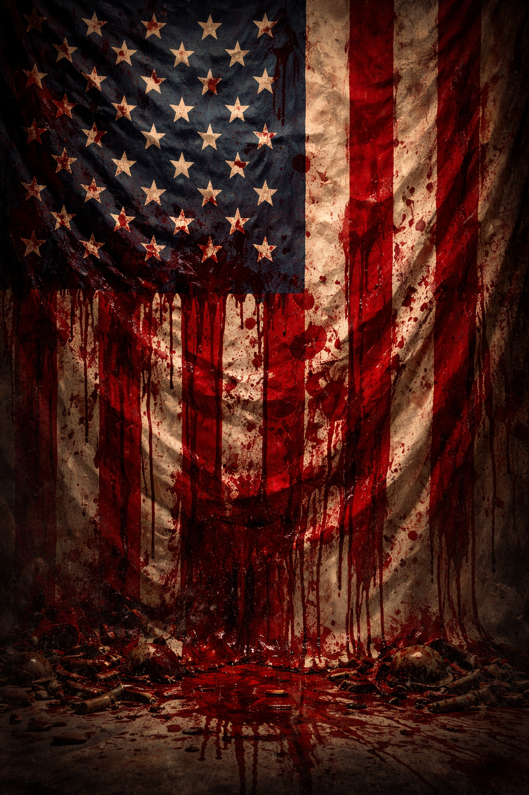
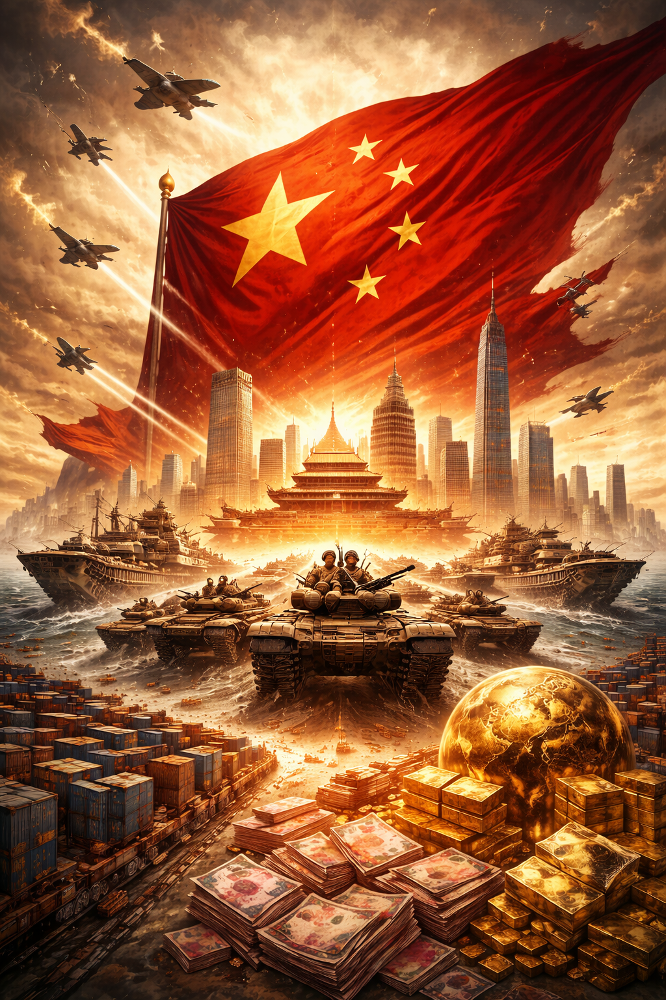
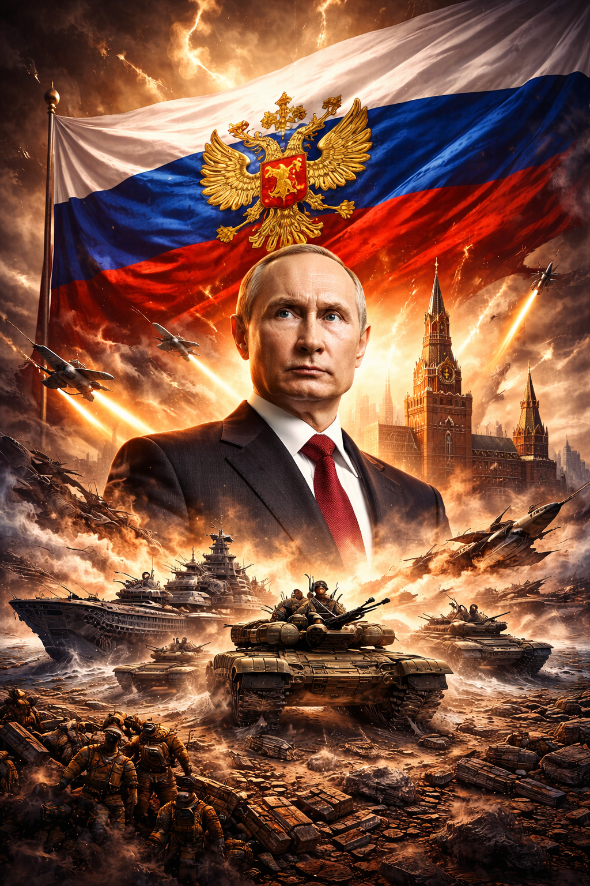

Estatu batuak sortu zenetik, hau da, 1976.urtetik, 250 urte pasatu dira. Horietatik 220 urte inguru zuzenean edo ez hain zuzenean konflikturen batean sartuta egon da.
19.mendetik hasita, Mexiko, indigena nazioen aurka eta potentzia kolonien aurka eraman ditu urte asko. Horren arrazoia bere boterea eta lurrak haunditzea izan da, inguruko lurraldeak zapalduz.
1898-an Espainiaren aurka egindako gerraren geroztik, potentzia internazional bat balitz bezala hasi zen jokatzen munduaren aurrean. 2. Mundu gerra hasi zenetik, munduko superpotentzia bihurtu zen.
Gaur egun, 2026an, konfliktu ireki asko ditu eta etorkizuna ez da garbia, mundua kolokal jarri baitu Trumpen politikek./p>

Txinatar kultura oso zaharra da, 5.000 urte baino gehiagoko historia dauka, nahiz eta gaur ezagutzen dugun (Republica popular de China), 1949.urtean sortu zen, hau da, orain dela 77 urte.
Bere sorreratik, 8 bat urte egon da gerra ireki batean beste herrialdeekin. Horietatik aipatzekoak, honakoak dira; Txinako gerra zibila; 1949.urtean, Korearekin izandako gerra; 1950-1953, Indiarekin konfliktua 1962.urtean eta Vietnameko guerra 1978.urtean.
Txina partziala izaten ari da gaur egun AEB-a izaten ari den konfliktuen aurrean, nahiz eta bere indar politikoa, militarra eta ekonomikoa asko hasi den azkenenko 2 hamarkadetan.

Errusia gaur egun munduko potentzia militar nagusietako bat da, batez ere arma nuklearren eta energia baliabideen (gasa eta petrolioa) bidez duen eraginagatik. Bere jatorria Sobietar Batasuna-ren desagerpenaren ondoren (1991) gaur egungo estatu gisa sendotu zen. Historikoki, inperio handia izan zen, eta XX. mendean superpotentzia bihurtu zen AEBekin batera. Gaur egun, bere eragina batez ere Ekialdeko Europan, Kaukason eta Ekialde Hurbilean nabaritzen da, eta gatazka geopolitikoetan —bereziki Ukrainarekin— protagonismo handia du. Bere estrategia segurtasunean, eragin erregionala mantentzean eta Mendebaldearekiko lehian oinarritzen da.
{kind=link}
{kind=link}
{kind=link}